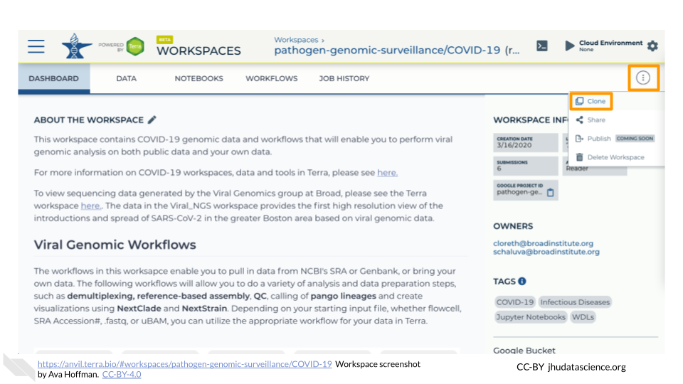
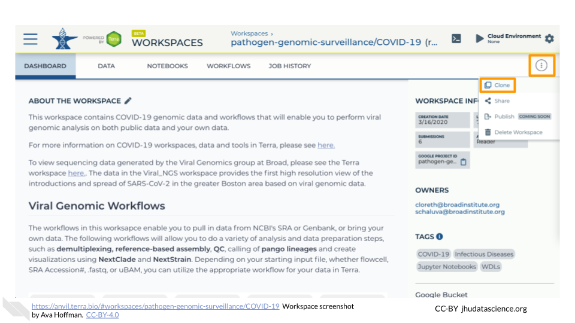
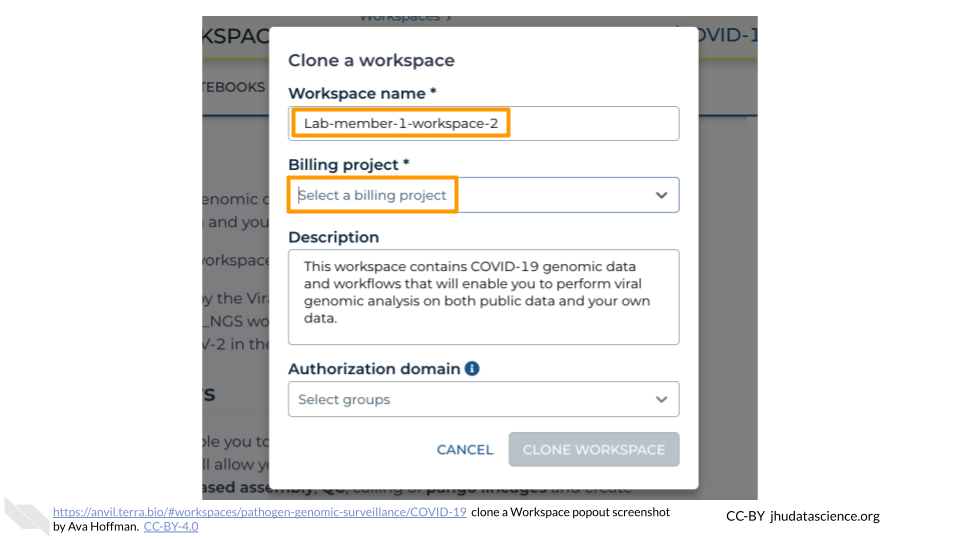

Chapter 7 Using premade content
This chapter will help you get started with the premade class activities available through AnVIL. Activities currently available are listed on the home page of this guide.
Notify Terra
Contacting Terra ahead of your class time helps the Terra team avoid any major disruptions to your class. Contact Terra by submitting a request for a hold on scheduled maintenance and downtime. It’s also a good idea to ask about major changes planned for the time prior to your class.
7.1 Before You Start
You need to set up Billing. This includes your Google Billing Account and Terra Billing Project. Take note of your Terra Billing Project name.
If you are running one of the activities that uses RStudio, you should launch RStudio using the Community-Maintained RStudio Environment. This requires you to be familiar with RStudio on AnVIL.
Notify Terra. Contacting Terra ahead of your class time helps the Terra team avoid any major disruptions to your class. Contact Terra by submitting a request for a hold on scheduled maintenance and downtime. It’s also a good idea to ask about major changes planned for the time prior to your class.
7.2 Cloning the workspace
Workspaces are the building blocks of projects in Terra. Inside a Workspace, you can run analyses, launch interactive tools like RStudio and Galaxy, store data, and share results.
Cloning the workspace associated with one of the premade AnVIL activities gives you access to all the necessary data. When cloning, AnVIL makes a copy of notebooks and code for you to modify. Data however, is linked back to the original Workspace through Data Tables, which saves space!
The video below gives a brief introduction to the parts of a Workspace.
Locate the Workspace you want to clone. If a Workspace has been shared with you ahead of time, it will appear in “MY WORKSPACES”. You can clone a Workspace that was shared with you to perform your own analyses. In the screenshot below, no Workspaces have been shared.

If a Workspace hasn’t been shared with you, navigate to the “FEATURED” or “PUBLIC” Workspace tabs.

Use the search box to find the Workspace you want to clone.

Click the teardrop button on the far right next to the Workspace you want to clone. Click “Clone”. You can also clone the Workspace from the Workspace Dashboard instead of the search results.
 
You will see a popup box appear. Name your Workspace and select the appropriate Terra Billing Project. All activity in the Workspace will be charged to this Billing Project (regardless of who conducted it). Remember that each Workspace should have its own Billing Project.

If you are working with protected data, you can set the Authorization Domain to limit who can be added to your Workspace. Note that the Authorization Domain cannot be changed after the Workspace is created (i.e. there is no way to make this Workspace shareable with a larger audience in the future). Workspaces by default are only visible to people you specifically share them with. Authorization domains add an extra layer of enforcement over privacy, but by nature make sharing more complicated. We recommend using Authorization Domains in cases where it is extremely important and/or legally required that the data be kept private (e.g. protected patient data, industry data). For data you would merely prefer not be shared with the world, we recommend relying on standard Workspace sharing permissions rather than Authorization Domains, as Authorization Domains can make future collaborations, publications, or other sharing complicated.

Click “CLONE WORKSPACE”. The new Workspace should now show up under your Workspaces.